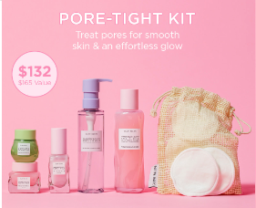
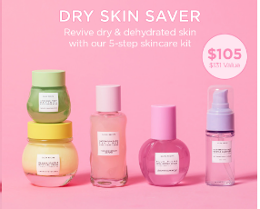
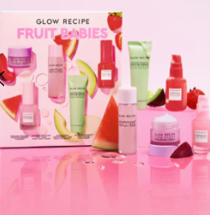
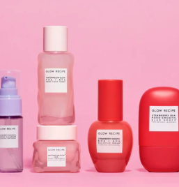

Featuring a word from our CEOs
| Product | Description |
|---|---|
|  | An essential part of any good skin-care routine, toners help prep and plump skin to readily absorb the rest of your routine. Our innovative formula contains a balance of hydrating ingredients and pore-tightening actives to equally minimize the look of pores and hydrate skin |
|  | Help to treat texture and breakouts over time with this never sticky, pillowy watergel textured serum. Powered by our 10% Clarity Acid Complex™–a special blend of 2% salicylic acid & mandelic acid (AHA+BHA), strawberry, azelaic acid, and succinic acid–this serum gently smooths texture, clears breakouts, and refines pores, while calming skin. |
|  | This midi-size set of bestsellers, including the bestselling Watermelon Niacinamide Dew Drops, harnesses the power of clinically effective actives—PHA, BHA, ceramides, and hyaluronic acid—to visibly tighten pores, smooth texture, soothe, and hydrate for glowing skin. |
|  | Everyone has pores, but sometimes they can feel congested and need a good deep cleanse. This curated kit has everything you need to help visibly minimize the look of pores while giving you your smoothest skin yet! |